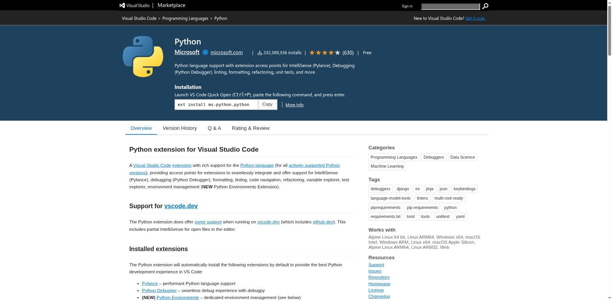
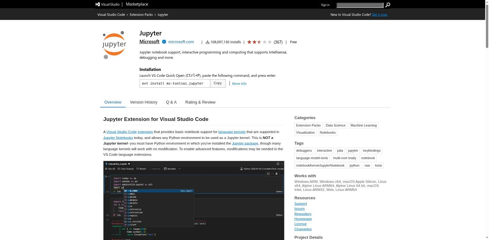
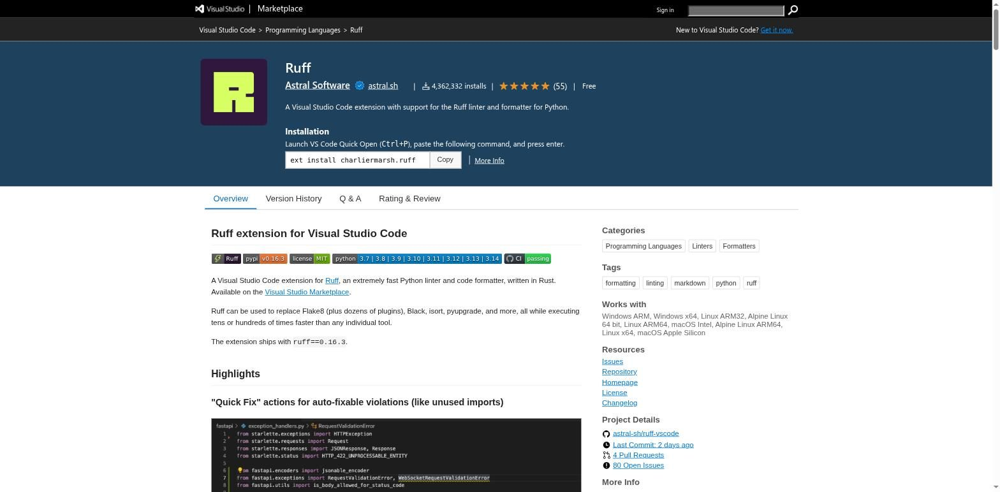

VS Code: установка и расширения
VS Code сам по себе не понимает Python — эту способность ему дают расширения. Разберём, что ставить и зачем каждое из них нужно.
VS Code (Visual Studio Code) — бесплатный редактор кода от Microsoft. Сам по себе, «из коробки», он ничего не знает о Python — это универсальный текстовый редактор для десятков языков. Понимание Python ему дают расширения (extensions) — отдельные маленькие плагины, которые вы устанавливаете поверх редактора.
Установка VS Code
Скачайте установщик с официального сайта code.visualstudio.com для вашей операционной системы и пройдите обычный мастер установки — здесь нет особых ловушек вроде флажка PATH из раздела 2.3.
Расширение Python — и что оно ставит само
Откройте вкладку Extensions (значок из четырёх квадратов на боковой панели, или
Ctrl+Shift+X) и найдите расширение Python от
Microsoft.

Когда вы устанавливаете это расширение, VS Code Marketplace автоматически подтягивает ещё три расширения вместе с ним:
- Pylance — быстрый анализатор кода (автодополнение, подсказки типов, переход к определению);
- Python Debugger — отдельный движок для пошаговой отладки;
- Python Environments — новый интерфейс для создания и переключения виртуальных окружений прямо из VS Code.
Расширение Jupyter
Если вы планируете работать с блокнотами (notebooks, файлы .ipynb
— с ними мы уже встречались в интерактивной практике этого курса), понадобится расширение
Jupyter.

jupyter (раздел 2.15) — точно так же, как редактор и интерпретатор разделены в разделе 2.1.Расширение Ruff
Ruff — стремительно ставший стандартом инструмент проверки и форматирования кода от Astral Software (создателей uv, раздел 2.13). Он заменяет собой сразу несколько старых инструментов — Flake8, Black, isort — одним быстрым.

Что ставить: сводная таблица
| Расширение | Издатель | Зачем нужно | Статус |
|---|---|---|---|
| Python | Microsoft | Базовая поддержка языка: подсветка, запуск, отладка, выбор интерпретатора | Обязательно |
| Pylance | Microsoft | Быстрый анализ кода, автодополнение, подсказки типов | Ставится автоматически вместе с Python |
| Python Debugger | Microsoft | Отдельный движок пошаговой отладки (breakpoints, шаг за шагом) | Ставится автоматически вместе с Python |
| Python Environments | Microsoft | Новый интерфейс создания и переключения виртуальных окружений | Ставится автоматически вместе с Python |
| Jupyter | Microsoft | Работа с блокнотами .ipynb внутри VS Code | Рекомендуется |
| Ruff | Astral Software | Мгновенная проверка стиля и авто-форматирование кода | Рекомендуется |